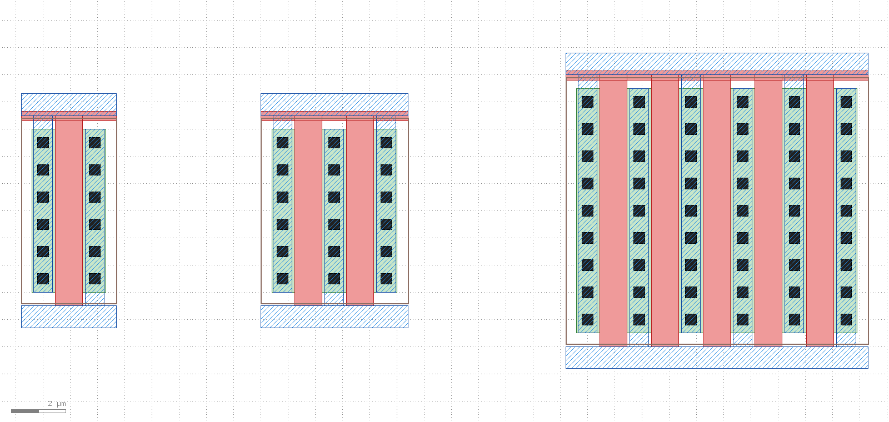

Loading: one file, zero compile
After pip install klayout-klink, klink init scaffolds example_template/ledit_bridge/:
ledit_bridge.cpp— the single macro file. In L-Edit: Tools → Macro → Load Macro… and pick the source file itself (L-Edit compiles it in place; the macro uses only the old-version API subset — older installs compatible by design, tested on v16.x; klink ships zero Siemens/Tanner files — the SDK header comes from your own L-Edit installation).driver.py— dependency-free smoke driver:python driver.py pingshows macro version, current design, and the capability list.tcell_workflows.py— the T-Cell loop CLI (below).
Transport is an inbox/outbox JSON file pair under %LOCALAPPDATA%\klink\ledit_bridge\; the macro polls on the UI thread every 200 ms and answers atomically. A hello.json heartbeat provides liveness.
Capability surface
| Area | Commands |
|---|---|
| Design files | new_design (bootstraps a .tdb even with nothing open) · open_design · save_design |
| Layers | ensure_layer (GDS numbers stamped; new layers auto-colored: solid fill, no outline) · set_layer_style · get_layers (fill color, special-layer flags) |
| Drawing | create_cell · draw (box/polygon/wire/circle, batch) · place_instance (incl. nx×ny arrays) · clear_cell |
| Full readout | get_selection · get_cell (shapes + per-object property trees + instances + ports + labels; wires carry cap/join, torus/pie carry exact params) · list_cells |
| Process knowledge | get_drc_rules — the design's whole rule table, machine-readable |
| T-Cells | get_tcell_params · instance_tcell (programmatic, parameterized) · set_tcell_code (write generator code back as a native T-Cell) |
Exchanging with KLayout (one-call MCP tools)
Once klink MCP is configured, an agent gets five intent-level tools in the bridge_ledit domain:
ledit.status— discovery and triage: macro liveness, whether a design is open, heartbeat age. Call it first when anything misbehaves; errors name the fix. New in 0.5.3: when the macro supports list_designs/list_cells, it also reports the open designs and the active design's cell list (with T-Cell flags) — "what's in L-Edit right now" is one call; older macros behave exactly as before (capability-gated).ledit.import_selection— you select in L-Edit, the agent imports into a fresh KLayout cell: circles stay parametric (CIRCLE PCells), layers migrate by name and GDS number (conflicts append, never overwrite), non-convertibles are listed, never dropped.ledit.push_cell— flat KLayout cell back into L-Edit (layers created by name there too).ledit.import_cell_tree— import an L-Edit cell AND its whole hierarchy into KLayout: children-first rebuild, instances stay instances (never flattened to shapes), layer identity migrates by name and GDS number the same way; every target cell is recreated, so re-importing is idempotent; shapes with no convertible outline are listed innot_convertible, never silently dropped.ledit.push_cell_tree— the other direction: push a KLayout cell and every cell below it into L-Edit, same children-first order, instances rebuilt as real instances;clear=Trueby default keeps re-pushing idempotent (L-Edit's draw only appends); the whole tree goes over as one batched request; placements L-Edit can't express exactly (magnification, non-orthogonal rotation, skewed arrays) are reported inunsupported_instances, never approximated.
T-Cells: parametric in both directions
A T-Cell's generator source lives in a cell property the bridge can read whole; parameter names parse deterministically from the generated DO-NOT-EDIT section. That opens both directions, with a single acceptance bar: byte-exact (sorted integer-nanometer boxes, element for element, with L-Edit's own generated geometry as ground truth).
python tcell_workflows.py read NFET_Generator # params + defaults
python tcell_workflows.py variants NFET_Generator --paramsets "[...]" --out ex.json
python tcell_workflows.py writeback MyGen --code gen.cpp --params "[...]"
python tcell_workflows.py verify MyGen --reference ref.py:boxes --paramsets "[...]"
python tcell_workflows.py fit MyGen --paramsets "[...]" --check "[...]" --out fit.json --register MY_DEVICE
python tcell_workflows.py to_pcell MyGen --reference ref.py:boxes --params-spec spec.json --paramsets ps.json --check chk.json --register MY_DEVICE- T-Cell → KLayout, geometry-only:
fit(v0.2.2) harvests exemplars and fits the v3 repeat-group model — counts, pitch and positions as exact integer laws, byte-verified against fresh L-Edit variants at held-out points, then registered as a live KLayout PCell (placement byte-verified too). What the model cannot express exactly and uniquely it REFUSES, naming the box family — alternating/parity structure stays on theto_pcellcode route below. - T-Cell → KLayout, code route (
to_pcell):to_pcellis the scaffolded version of the code-porting route — all three stages have to pass before anything is registered; any stage failing exits non-zero with instructive text, never leaving a half-done result. Step 1: byte-exact differential of your ported reference generator (Python,entry(params) -> {layer_name: [[x1,y1,x2,y2] int-nm boxes]}, harvest-native, the same dict shapeverifyuses) against fresh L-Edit variants at several--paramsets. Step 2: register that same function, unmodified, as a native KLayout PCell (libraryklink_custom; the mechanism is a newklink.domains.structdevice.pcell_native, and registration goes through the explicitexec.pythonescape hatch — deliberately, no plugin RPC accepts code directly; layer names map to GDS L/D numbers through your design's own layer table, and any GDS number not in that table is refused — klink never invents one). Step 3: an acceptance loop — at every--checkpoint, place the registered PCell live in KLayout, harvest the drawn boxes back, and byte-compare against a fresh L-Edit variant. This route covers exactly the structure the v3 fitter REFUSES — parity-alternating fingers, M×L bilinear extents, count-stepped structure — with full L/W/M parameter fidelity. - KLayout → T-Cell: the agent emits UPI code →
writeback(also defines the parameter table) → L-Edit compiles it in place → a native parametric T-Cell, indistinguishable from a hand-written one.
Here is a real run against L-Edit's own stock NFET_Generator sample — the exact device whose parity/M×L structure the fitter REFUSES:
$ python tcell_workflows.py to_pcell NFET_Generator --reference nfet_ref.py:nfet_boxes \
--params-spec spec.json --paramsets ps.json --check chk.json --register NFET_KLINK
step 1/3: byte-exact verify -- nfet_boxes vs L-Edit NFET_Generator at 5 paramset(s) ...
{'L': 2, 'W': 5, 'M': 1}: 10 boxes -> BYTE-EXACT
{'L': 2, 'W': 8, 'M': 2}: 16 boxes -> BYTE-EXACT
{'L': 3, 'W': 12, 'M': 3}: 24 boxes -> BYTE-EXACT
{'L': 2.5, 'W': 9, 'M': 4}: 24 boxes -> BYTE-EXACT
{'L': 2, 'W': 9.5, 'M': 2}: 16 boxes -> BYTE-EXACT
VERDICT: ALL BYTE-EXACT
step 2/3: registering 'NFET_KLINK' in library 'klink_custom' ...
registered KLayout PCell NFET_KLINK (library klink_custom, params ['L', 'W', 'M'])
step 3/3: acceptance loop -- 3 --check point(s), live KLayout placement vs fresh L-Edit variant ...
[1/3] {'L': 4, 'W': 15, 'M': 5} ... BYTE-EXACT (34 boxes)
[2/3] {'L': 2, 'W': 6, 'M': 2} ... BYTE-EXACT (13 boxes)
[3/3] {'L': 3.5, 'W': 10.5, 'M': 3} ... BYTE-EXACT (20 boxes)
SUCCESS
to_pcell-registered native PCell at M=1 / M=2 / M=5: finger count follows M, contact row count follows a floor law in W, and the metal columns alternate hooking to the top vs. bottom rail — exactly the parity structure the fitter REFUSES. to_pcell carries it into KLayout unchanged, byte-exact.Known boundaries & troubleshooting
| Symptom / boundary | Meaning / fix |
|---|---|
Heartbeat stalls (stale hello.json) | A modal dialog is open in L-Edit (often a T-Cell compile error) — close it and the bridge resumes |
| Changed T-Cell code but geometry unchanged | L-Edit caches variants: use fresh parameter values or Tools → Regenerate T-Cells |
| Drawing into an existing cell doubles content | draw is append-only — regenerate via clear_cell or a fresh cell |
| Two L-Edit instances with the macro | single namespace for now; keep one instance |
A layer shows GDS -1 | it will not export correctly — bridge-created layers stamp numbers; written-back code should follow the need_layer pattern |
Scope: parametric intelligence (fitting, porting, verification) runs on the klink/KLayout side; L-Edit receives native results (static cells or real T-Cells). The bridge is an external adapter shipped with klink, not an L-Edit plugin.